2道CTF_APK题不能调试的解决方法及引发的思考 前言 最近找到2个安卓题目来练习，分析后发现如果可以调试的话会大大降低难度（一道是JEB调试，一道是IDA调试so文件），于是我用工具开始调试，发现都没有办法调试，经过各种查阅资料终于可以调试了，于是写下此文，记录下环境配置。
链接：https://pan.baidu.com/s/1nYwqxmipw_marYN6wKJjAg
提取码：9rxq
题目:CTF_2.apk 遇到问题 JEB调试APK的时候, 先adb shell， 然后查看进程ID，为4546
1 2 3 beyond1q:/ ps | grep "ctf" u0_a44 4546 1876 964728 83108 d772dcc0 S com.example.ctf
打开JEB附加
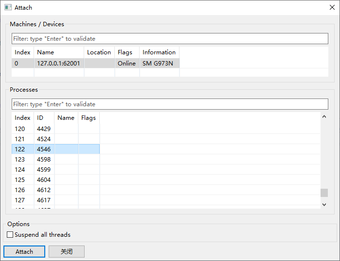
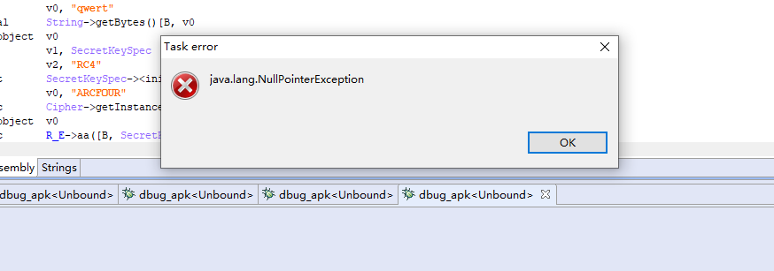
没法调试，下面开始解决
解决问题 打开Manifest ，发现并没有android:debuggable="true"
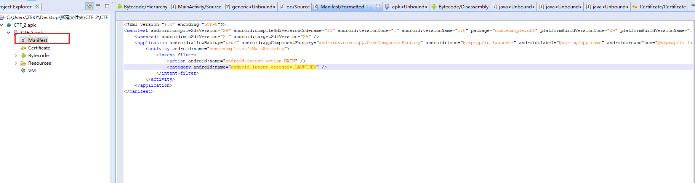
先解包 apktool.bat d CTF_2_.apk
于是用加上后用重新打包 apktool.bat b CTF_2_， 新生成的APK文件在 CTF_2_\dist中, 这个时候如果直接安装的话会报错
1 2 3 4 C:\Users\ZSKY\Desktop\新建文件夹\CTF_2\CTF_2_\dist λ adb install CTF_2_.apk 4685 KB/s (3004999 bytes in 0.626s) Failure [INSTALL_PARSE_FAILED_NO_CERTIFICATES: Failed to collect certificates from /data/app/vmdl625528294.tmp/base.apk: Attempt to get length of null array]
还需要签名才可以
1 2 3 4 5 6 7 8 9 10 11 12 13 14 15 16 17 18 C:\Users\ZSKY\Desktop\新建文件夹\CTF_2 λ keytool -genkey -keystore coolapk.keystore -keyalg RSA -validity 10000 -alias coolapk 输入密钥库口令: #123456 再次输入新口令: #123456 您的名字与姓氏是什么? [Unknown]: 您的组织单位名称是什么? [Unknown]: 您的组织名称是什么? [Unknown]: 您所在的城市或区域名称是什么? [Unknown]: 您所在的省/市/自治区名称是什么? [Unknown]: 该单位的双字母国家/地区代码是什么? [Unknown]: CN=Unknown, OU=Unknown, O=Unknown, L=Unknown, ST=Unknown, C=Unknown是否正确? [否]: y
生成签名文件命令: keytool -genkey -keystore 签名文件的文件名 -keyalg RSA -validity 10000 -alias 签名文件别名
这个时候会生成coolapk.keystore签名文件, 然后运行
jarsigner.exe -verbose -keystore coolapk.keystore -storepass 123456 -signedjar CTF_2_new_sign.apk -digestalg SHA1 -sigalg MD5withRSA CTF_2_new.apk coolapk 即可签名
给APK添加签名命令: jarsigner.exe -verbose -keystore coolapk.keystore -storepass 密码 -signedjar 新的APK文件名 -digestalg SHA1 -sigalg MD5withRSA 需要签名的APK文件名 签名文件的别名
这个时候，把之前的安装好的APK删除，然后运行adb install CTF_2_new_sign.apk即可安装成功
再用JEB调试的时候，这里会多一个D标志
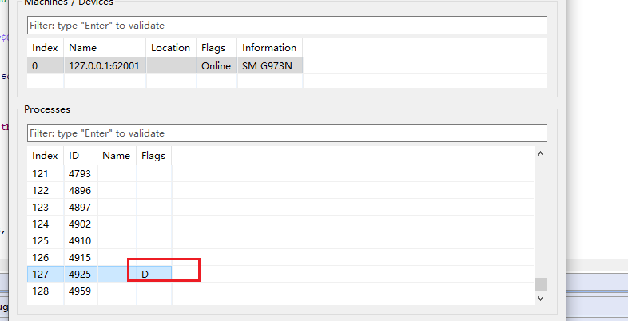
下断点输入FLAG，程序就会断下了
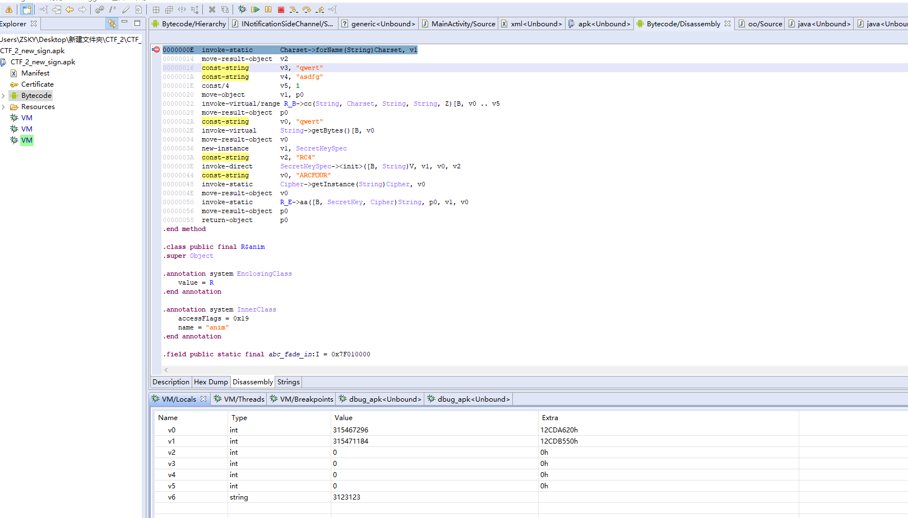
题目:CTF_4.apk 遇到问题 IDA在 检测flag的函数那里下断点，手机输入flag后点注册按钮，IDA总是断不下来，然后下断点的话是橘黄色，后来查阅资料发现是基址的问题，这里libnative-lib.so 文件加载的基址居然是0
IDA如何调试安卓so文件可以参考: https://zzzzsky.com/2021/11/29/IDA%E7%9C%9F%E6%9C%BA%E8%B0%83%E8%AF%95%E5%AE%89%E5%8D%93so%E6%96%87%E4%BB%B6/
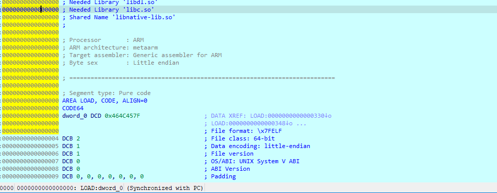
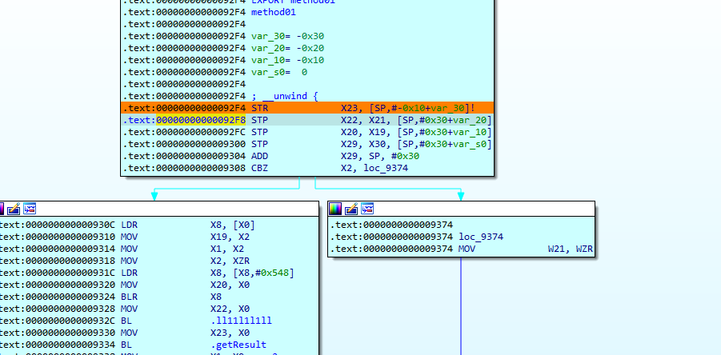
解决问题 1、尝试去找加载该so文件的基址然后手动修复
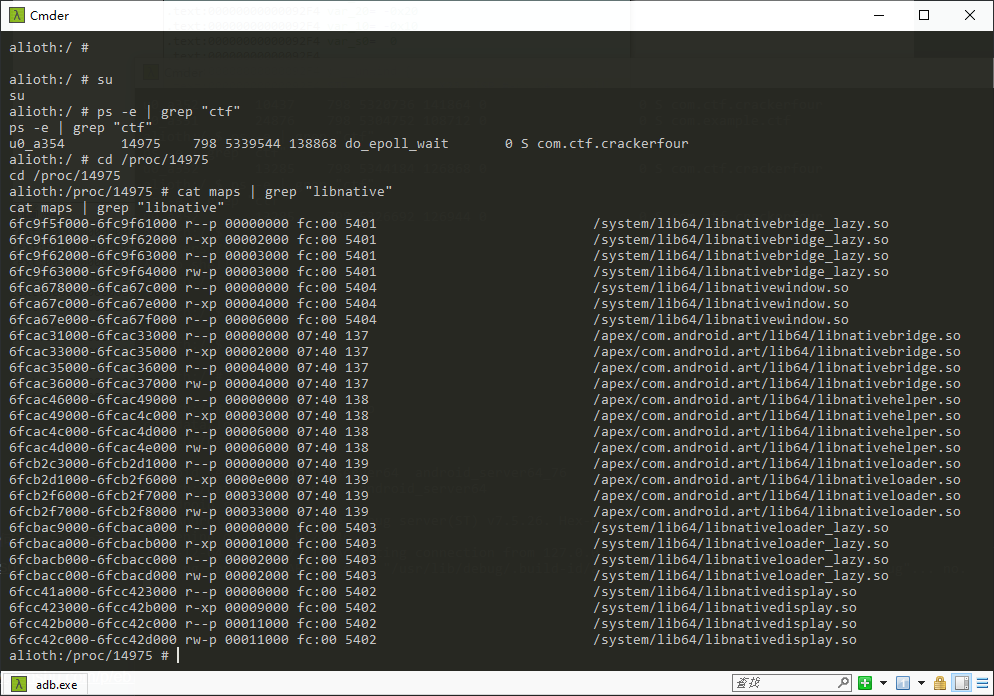
根本找不到该so文件。
2、用CTF_2那个方法把android:debuggable="true"加上，然后重新打包签名，然后adb install CTF_4.apk的时候遇到了错误
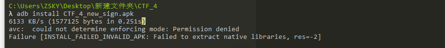
经查阅，此错误是android:extractNativeLibs="false"的缘故，改为android:extractNativeLibs="true"即可，我们即加上android:debuggable="true"
也设置android:extractNativeLibs="true"重新签名打包，发现可以调试
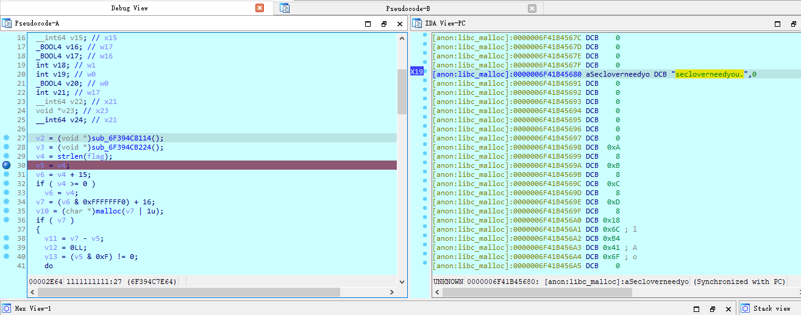
思考 在上一步解决问题之后，还是查看maps文件看基值，当点击注册按钮之后，发现可以发现加载了这个so文件，并且前面有基址，估计是android:extractNativeLibs="true"的原因
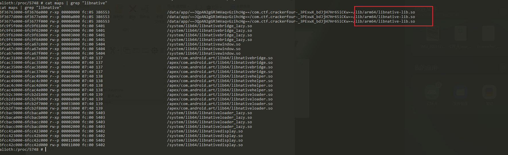
我想测试，如果仅仅设置android:extractNativeLibs="true" 而 android:debuggable="false"不变的情况下，能不能通过手动的修复基址来达到IDA调试so的目的，开始测试，android:extractNativeLibs="true" android:debuggable="false" 重新打包签名，然后安装, 手机运行CTF_4， 然后查看maps文件有没有加载那个so文件
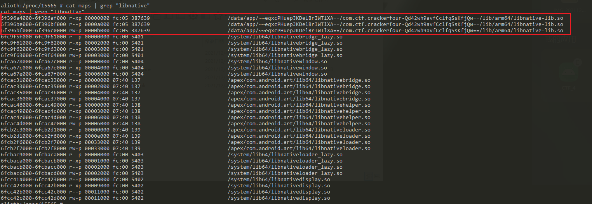
可以发现，果然加载了,然后准备调试，手机点击注册按钮，IDA弹出
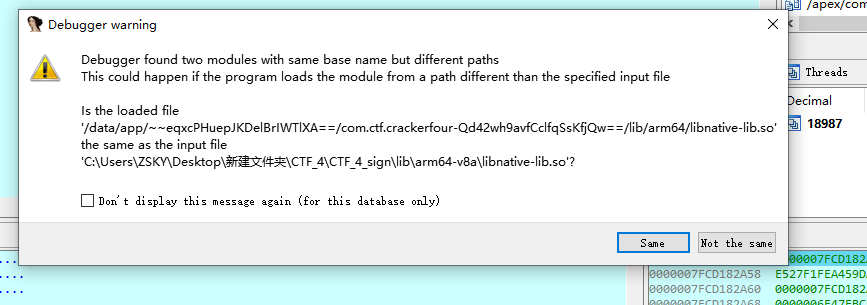
点击same，然后在断点那里断下，不需要修复基址
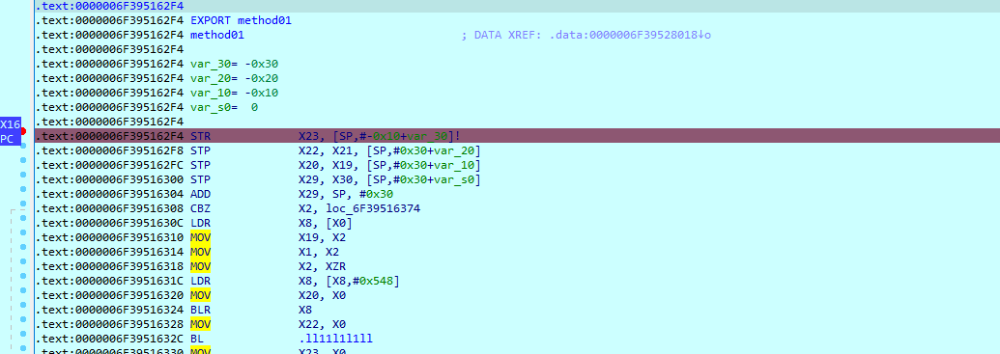
所以，如果仅仅是IDA调试so的话，不需要JEB调试的话，根本不需要设置android:debuggable="true",但是必须得android:extractNativeLibs="true"
并且这里这个android:extractNativeLibs 如果设置为true或false，感觉有点像PE的那个静态库和动态库
半自动脚本 写了个半自动脚本，自动加debug属性，然后重新打包签名，环境为python3.8
1 2 3 4 5 6 7 8 9 10 11 12 13 14 15 16 17 18 19 20 21 22 23 24 25 26 27 28 29 30 31 32 33 34 35 36 37 38 39 40 41 42 43 44 45 46 47 48 49 50 51 52 53 54 55 56 57 58 59 60 61 62 63 64 65 66 67 68 69 70 import sysimport subprocessimport osfrom xml.dom.minidom import parsedef handle_xml (): dom = parse("AndroidManifest.xml" ) data = dom.documentElement application = data.getElementsByTagName("application" ) print ("[+] 正在修改 android:debuggable 属性" ) application[0 ].setAttribute("android:debuggable" , "true" ) if application[0 ].getAttribute("android:extractNativeLibs" ) == 'false' : print ("[+] 正在修改android:extractNativeLibs 属性" ) application[0 ].setAttribute("android:extractNativeLibs" , "true" ) f = open ("AndroidManifest.xml" , 'w' ) dom.writexml(f, encoding="utf-8" ) f.close() with open ("AndroidManifest.xml" , "r" , encoding="utf-8" ) as f: c = f.read() c = c.replace('encoding="utf-8"' , 'encoding="utf-8" standalone="no"' ) f.close() with open ("AndroidManifest.xml" , "w" , encoding="utf-8" )as f: f.write(c) if __name__ == "__main__" : if len (sys.argv) != 2 : print ("[X] 格式有错! python后跟apk名字" ) sys.exit(-1 ) apkpath = sys.argv[1 ] apkname = os.path.splitext(apkpath)[0 ] apkdirpath = apkname + "_DIR" print ("[+] 解包APK文件" ) subprocess.run(['apktool.bat' , 'd' , apkpath, "-o" , apkdirpath]) os.chdir(apkdirpath) print ("[+] 当前工作路径为: " + os.getcwd()) handle_xml() print ("[+] 修改XML文件成功" ) os.chdir('../' ) print ("[+] 重新打包APK文件" ) print ("[+] 当前工作路径为: " + os.getcwd()) apkpath_new = apkname + "_new.apk" subprocess.run(['apktool.bat' , 'b' , apkdirpath, "-o" , apkpath_new]) print ("[+] 密码请输入123456，否则会出错" ) subprocess.run(['keytool' , '-genkey' , '-keystore' , apkname + "_new.keystore" , '-keyalg' , 'RSA' , '-validity' , '10000' , '-alias' , apkname]) print (f"[+] 给{apkname} _new.apk添加签名" ) subprocess.run(['jarsigner.exe' , '-verbose' , '-keystore' , apkname + "_new.keystore" , '-storepass' , '123456' , '-signedjar' , apkname + '_new_sign.apk' , '-digestalg' , 'SHA1' , '-sigalg' , 'MD5withRSA' , apkname + "_new.apk" , apkname])
总结
如果是JEB调试，必须设置android:debuggable="true"
如果不用JEB，仅仅是IDA调试so文件，不用必须设置android:debuggable="true", 但是必须得设置android:extractNativeLibs="true"
参考文章
https://www.jianshu.com/p/eb766d2bb837
https://www.jianshu.com/p/879d53256ff3
 微信
微信 支付宝
支付宝